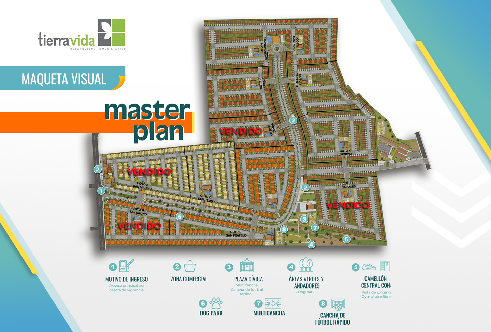
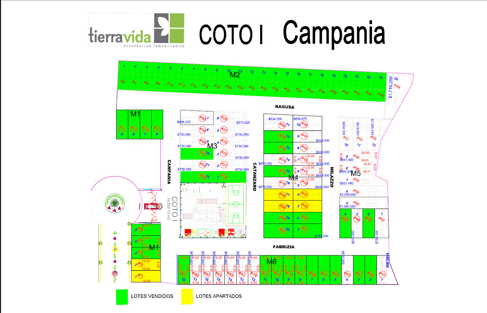
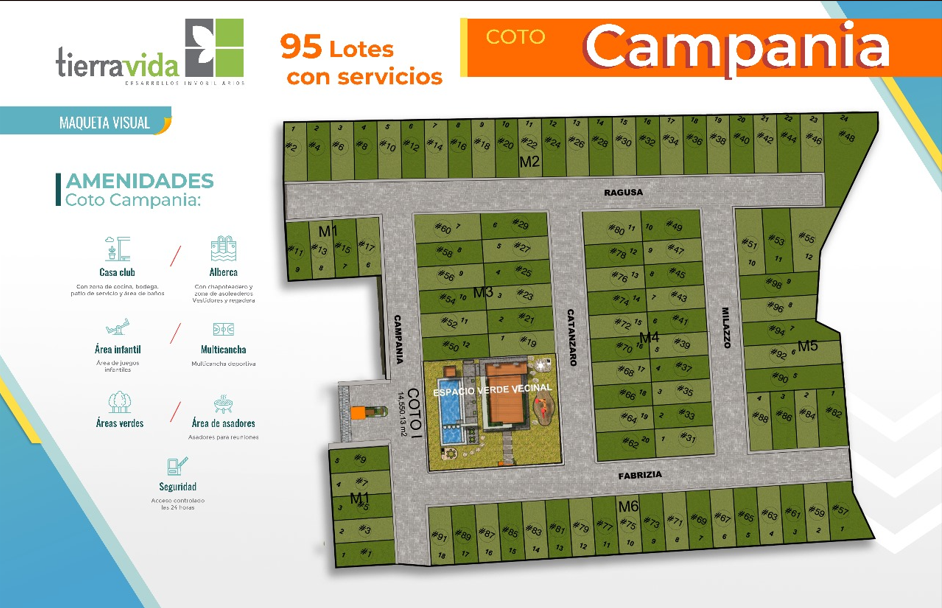
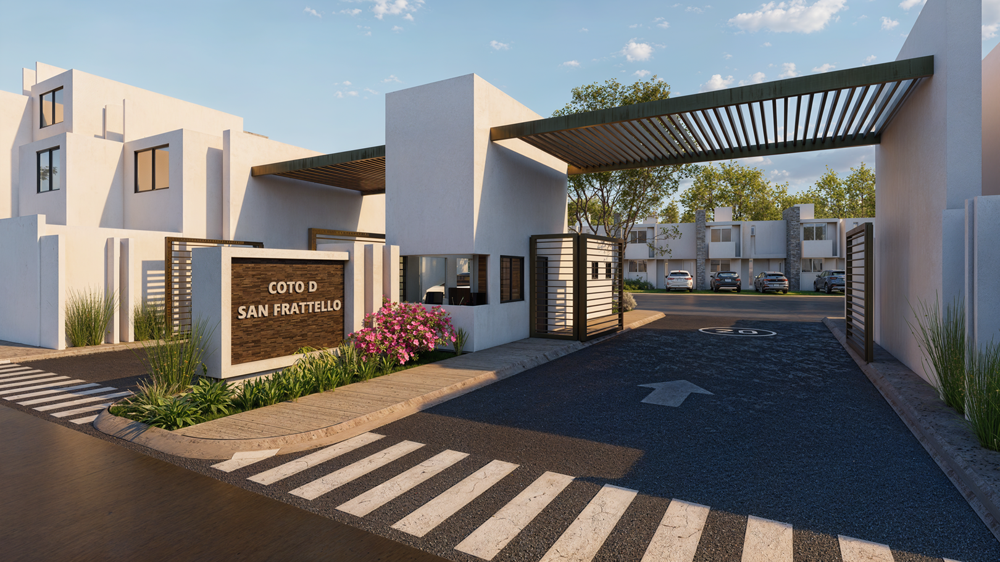
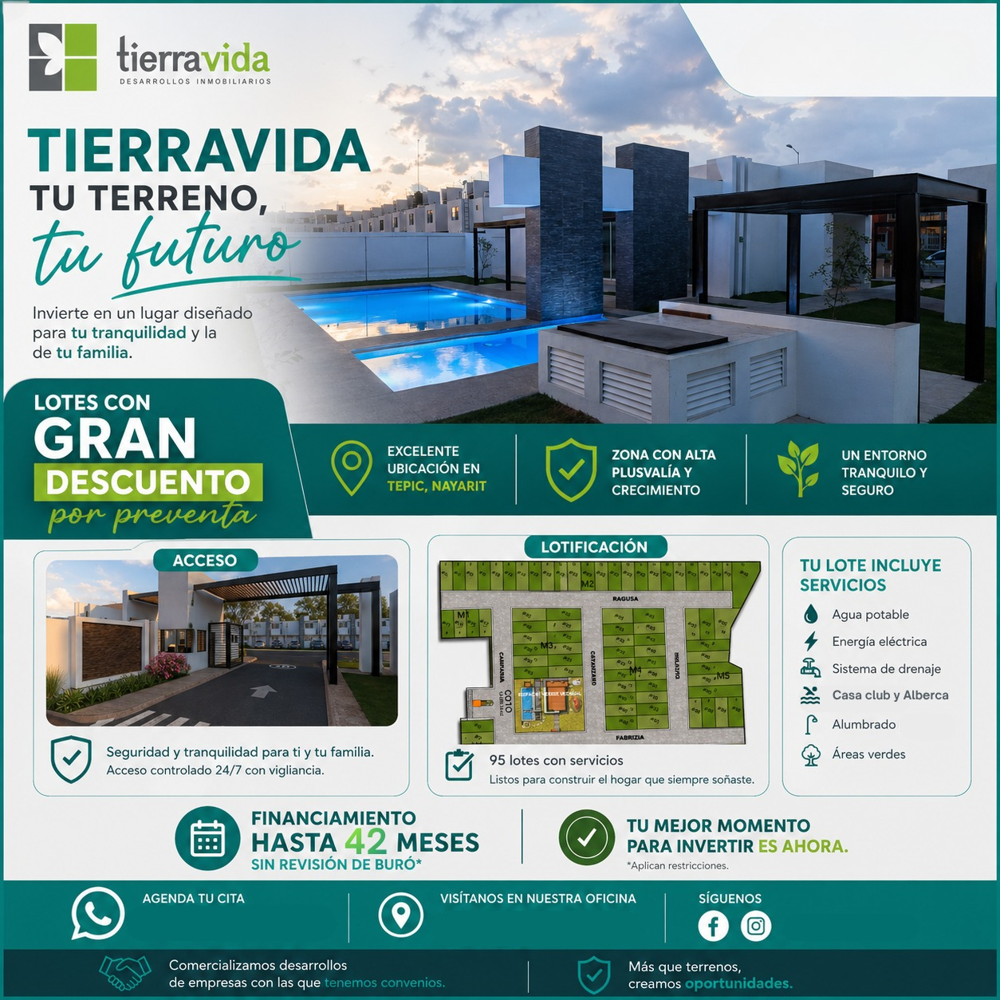
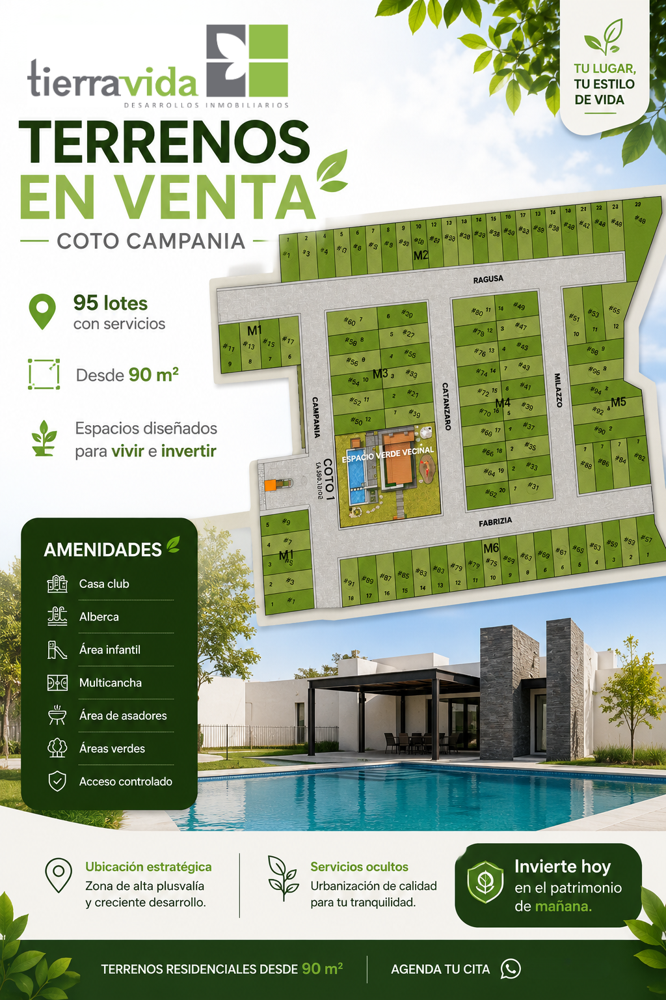
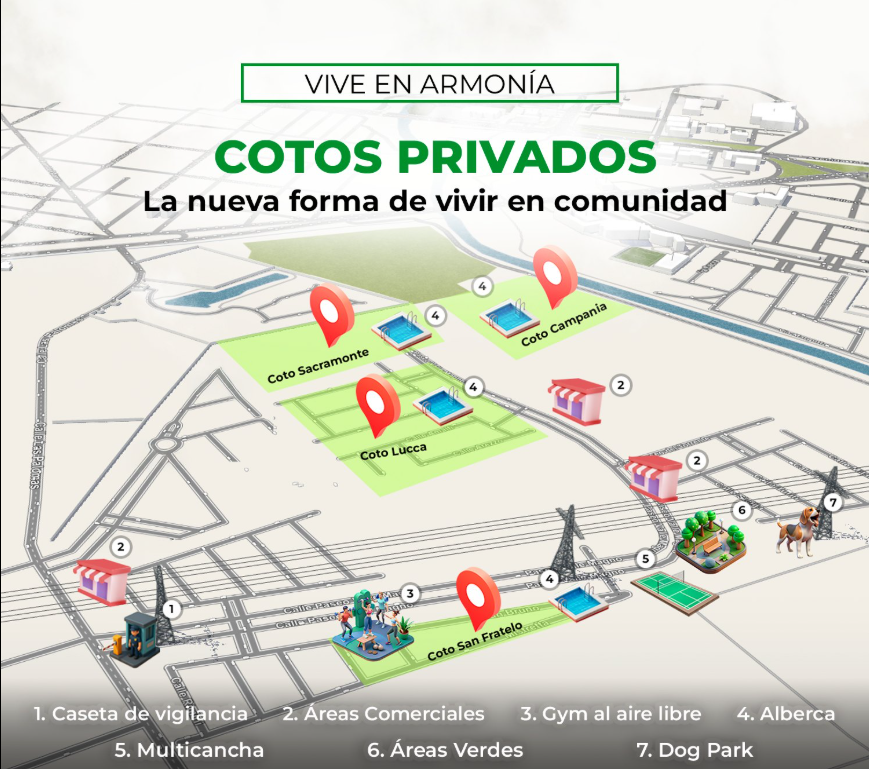

CAMPANIA
Terrenos Residenciales | Terra Vida
95 lotes con servicios, amenidades exclusivas y financiamiento para construir el patrimonio que imaginas.
Desde 90 m²
95 Lotes
Hasta 42 Meses
Terrenos Residenciales | Terra Vida
95 lotes con servicios, amenidades exclusivas y financiamiento para construir el patrimonio que imaginas.
Coto Campania es un desarrollo residencial dentro de Terra Vida, diseñado para quienes desean construir su hogar en una comunidad planeada o invertir en una zona con alta proyección de crecimiento y plusvalía.
Desarrollo residencial con urbanización, servicios y amenidades.
Lotes ideales para construir vivienda o invertir a futuro.
Planes disponibles hasta 42 meses.
Zona de crecimiento y desarrollo continuo en Tepic.

Consulta la disponibilidad actual, lotes vendidos y lotes apartados dentro de Coto Campania.

Adquiere tu terreno con planes de financiamiento de hasta 42 meses y comienza a construir tu patrimonio en una de las zonas con mayor crecimiento de Tepic.
Consulta la información importante del desarrollo antes de elegir tu lote.
Reglamento de Construcción Disponibilidad de Lotes





Campania representa una excelente oportunidad para construir el hogar que imaginas o invertir en una zona con gran potencial de crecimiento. Un desarrollo planeado, con amenidades, servicios y financiamiento que facilitan convertir tu patrimonio en una realidad.
Volver a Terra Vida